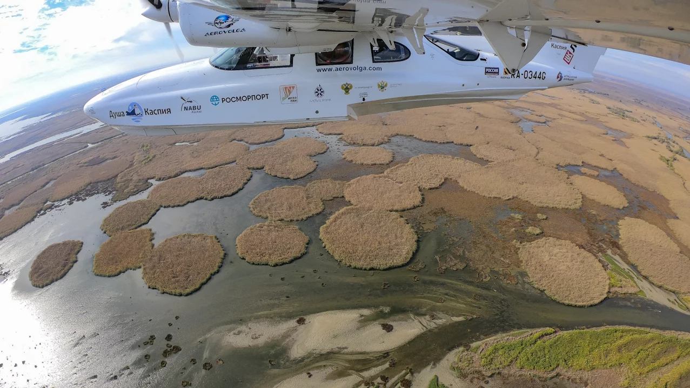

XII Международная научно-практическая конференция
Круглый стол
Применение искусственного интеллекта для изучения биологических объектов
На повестке встречи стоит задача оценить текущее состояние использования ИИ в части изучения биологического разнообразия, определить потребности потенциальных заказчиков, наметить основные направления для сотрудничества научных организаций, образовательных учреждений, бизнеса и государства.
Центральные вопросы панельной дискуссии:
- Улучшение качества исследований животного мира методами ИИ, возможность масштабирования таких исследований;
- Унифицированность методов исследований, объединение и накопление данных в единой базе;
- Экономическая эффективность внедрения ИИ в работы и методы её оценки;
- Легитимность применения ИИ в составе производственного экологического мониторинга и программ по сохранению биологического разнообразия.

Современные авиационные исследования объектов биологического разнообразия. Практика и перспективы развития.
Цель и задачи круглого стола:
- Объединить усилия единомышленников;
- Собрать за одним столом специалистов из различных организаций и ведомств, которые обладают опытом проведения авиационных учётов, с применением различных методик и видов воздушных судов: самолётов малой авиации, сверхлёгкой авиации, БПЛА и др.;
- Озвучить накопленные проблемы и совместно выработать пути их решения;
- Подвести итоги, сформировав резолюцию круглого стола, которая будет направлена официально в профильные и заинтересованные ведомства.
Предполагаемые темы для обсуждений:
- Актуальные научные результаты авиационных исследований объектов биоразнообразия: последние достижения и первоочередные задачи;
- Правовые основы проведения авиационных исследований;
- БПЛА, сверхмалая авиация и самолеты – в чем преимущества/недостатки каждого типа воздушного судна для проведения авиационных исследований. Комплексные исследования – проблемы и преимущества;
- Методические подходы и специальное техническое оснащение экспедиции. Необходимо ли утверждение единого стандарта?
- Перспективы развития авиаучетов в России, как одного из эффективных методов мониторинга/исследования объектов биоразнообразия.

14.03.2023
Открытие регистрации и приема тезисов
14.07.2023
Окончание приема кратких аннотаций докладов
14.08.2023
- Оповещение авторов о включении в программу
- Публикация списка принятых докладов
11.09.2023
- Окончание приема полных тезисов докладов
- Публикация предварительной программы
15.10.2023
Окончание регистрации на конференцию
23-27.10.2023
Конференция